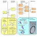
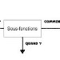
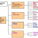
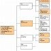

Séquence 35 : Diagramme FAST
Compétences Du Programme (Cycle 4) :
CT 2.4 : Associer des solutions techniques à des fonctions.
Situation déclenchante
- Qu'est ce qu'un Diagramme FAST ? Function Analysis System Technique.
Problématique : Comment organiser la recherche des solutions techniques ?
- Hypothèses : [chaque élève rédige ses hypothèses dans son cahier]
Activité :
Question 1 : Qu'est ce qu'une solution technique ?
Question 2 : Pourquoi avons nous besoin de solutions techniques ?
Question 2 : Pourquoi avons nous besoin de solutions techniques ?
Activité 1 : sequence35-fiche-activite1-eleve.pdf
Correction :
Correction activité 1 : sequence34-fiche-activite1-prof.pdf
Ressources :




- Le diagramme FAST se construit de gauche à droite
- La formulation d'une fonction est faite à l'aide d'un verbe à l'infinitif décrivant l'action, suivi d'un complément, traduisant l'objet.
- La fonction global (fonction principal), correspondant au service rendu par le système pour répondre aux besoins.
- Les fonctions de services (fonctions contraintes) traduisant des réactions, des résistances ou des adaptations à des éléments du milieu extérieur.
- Les fonctions techniques sont internes au produit, elles sont choisies par le constructeur dans le cadre d'une solution, pour assurer une fonction de service.
- Les composants (solutions techniques) sont la matérialisation d’une fonction technique, c’est-à-dire un des éléments de l’objet technique qui permet d’y répondre.
Exemples :




-
Structuration des connaissances :
Structuration 1 : msost12-fonctions-solutions.pdf
Structuration 2 : msost-1-2-c1-d-analyse-fonctionnelle-systemique.pdf
Structuration 3 : msost-1-2-c1-mf-analyse-fonctionnelle-systemique.pdf